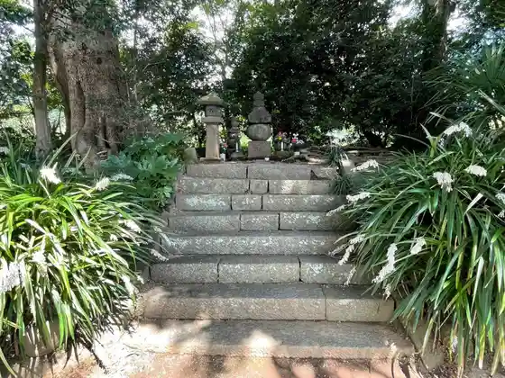
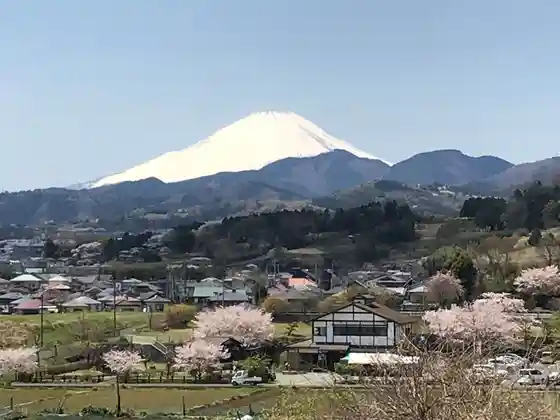
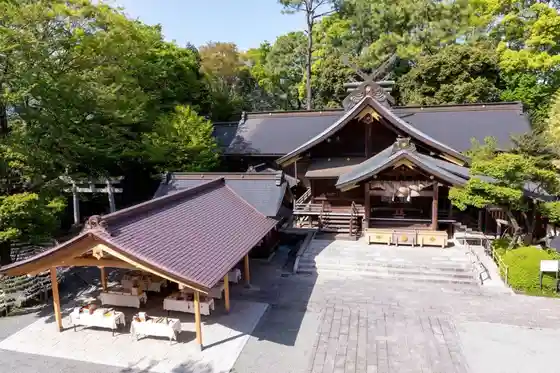
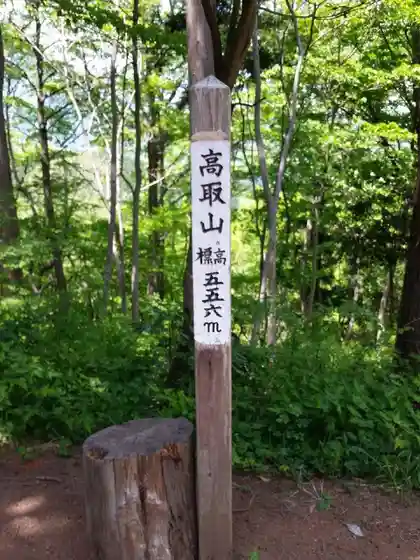

Gen Sanetomo Ko O Kubizuka
Hadano, Kanagawa · Official / source link

Tahara Furusato Park Soba Tokoro Shinonome
Hadano, Kanagawa · 0463-82-8833 · Official / source link

Izumotaisha Sagami Fun Shi
Hadano, Kanagawa · 0463-81-1122 · Official / source link

Takatori Yama
Hadano, Kanagawa · Official / source link

Zen Nami Toge
Hadano, Kanagawa · 0463-82-8833 · Official / source link
Nembutsu Yama
Hadano, Kanagawa · 0463-82-8833 · Official / source link
Hadano no Yusui (Hironori no Shimizu)
Hadano, Kanagawa · Official / source link
Ryokusui Iori
Hadano, Kanagawa · Official / source link
Hironori Yama Park
Hadano, Kanagawa · 0463-82-9648 · Official / source link
Hadano Kokusai Joba Club
Hadano, Kanagawa · 0463-81-5621 · Official / source link
Gyojagagaku
Hadano, Kanagawa · Official / source link
San no to
Hadano, Kanagawa · Official / source link
Karasu Oyama
Hadano, Kanagawa · Official / source link
to no Gaku
Hadano, Kanagawa · Official / source link
Ni no to
Hadano, Kanagawa · Official / source link
Kanai Shuzo Mise
Hadano, Kanagawa · 0463-88-7521 · Official / source link
Shin Nama Mizumi
Hadano, Kanagawa · 0463-82-9648 · Official / source link
Kanagawa Prefectural Hadano Togawa Park
Hadano, Kanagawa · 0463-87-9020 · Official / source link
Entsu Tera
Hadano, Kanagawa · Official / source link
Omote Tanzawa Kenmin Forest
Hadano, Kanagawa · Official / source link
Kokuryu Falls
Hadano, Kanagawa · Official / source link
Sakura Dote Kofun Park
Hadano, Kanagawa · 0463-87-5542 · Official / source link
Hadano Meisan Center
Hadano, Kanagawa · 0463-83-6477 · Official / source link
Jotoku In Shobuen
Hadano, Kanagawa · Official / source link
Nature Kansatsu Shisetsu Kuzuha no Ie
Hadano, Kanagawa · 0463-84-7874 · Official / source link
Imaizumihotaru Park
Hadano, Kanagawa · Official / source link
Naganuki no Tanada
Hadano, Kanagawa · Official / source link
Hironori no Sato Yu
Hadano, Kanagawa · 0463-69-2641 · Official / source link
Imaizumi Meisui Sakura Park
Hadano, Kanagawa · 0463-73-8612 · Official / source link
Maimai no Izumi
Hadano, Kanagawa · Official / source link
Na no Kadai
Hadano, Kanagawa · 0463-82-8833 · Official / source link
Tsurumaki Ajisai Sanpomichi
Hadano, Kanagawa · 0463-82-8833 · Official / source link
Ryujin no Izumi
Hadano, Kanagawa · Official / source link
Shiro Sasa Inari Shrine
Hadano, Kanagawa · 0463-81-0256 · Official / source link
Hada no Sakura Michi
Hadano, Kanagawa · Official / source link
Dainichi Do
Hadano, Kanagawa · Official / source link
Shungoku Yusui
Hadano, Kanagawa · Official / source link
Hige So Falls
Hadano, Kanagawa · Official / source link
Meisui Hada no Fujimi Baths
Hadano, Kanagawa · 0463-82-1026 · Official / source link
Hada no Tanzawa Kuraimingu Park
Hadano, Kanagawa · 0463-63-2630 · Official / source link
to no Gaku (Yabitsu Toge Tozanguchi)
Hadano, Kanagawa · Official / source link
Kanagawa Prefectural Sangaku Supotsu Center
Hadano, Kanagawa · 0463-87-9025 · Official / source link
Kitahara Do Seika
Hadano, Kanagawa · 0463-81-0665 · Official / source link
(Ari) Kamaka Shoten
Hadano, Kanagawa · 0463-81-0006 · Official / source link
Minoge Shizenkansatsu Forest
Hadano, Kanagawa · 0463-82-9618 · Official / source link
Hadano Ito Farm
Hadano, Kanagawa · Official / source link
Hada no Ukiyoe Gyararii
Hadano, Kanagawa · 0463-86-6309 · Official / source link
Hada no Jibasanzu
Hadano, Kanagawa · 0463-81-7707 · Official / source link
Tomoshibi Shoppu Yume Sanpo
Hadano, Kanagawa · 0463-73-6031 · Official / source link
Teuchi Chisoba Ishi Sho Iori
Hadano, Kanagawa · 0463-82-1222 · Official / source link
Toto no I no Sato Hadano Yubana Raku
Hadano, Kanagawa · 0463-84-4126 · Official / source link
Kanagawa Prefectural Hadano Togawa Park Minagawa
Hadano, Kanagawa · 0463-87-9020 · Official / source link
Hadano Ritsu Miyanaga Takehiko Kinen Art Museum
Hadano, Kanagawa · 0463-78-9100 · Official / source link
Hadano Ichi no Ya
Hadano, Kanagawa · 0463-81-0041 · Official / source link
Soba Tokoro Shinonome
Hadano, Kanagawa · 0463-84-1282 · Official / source link